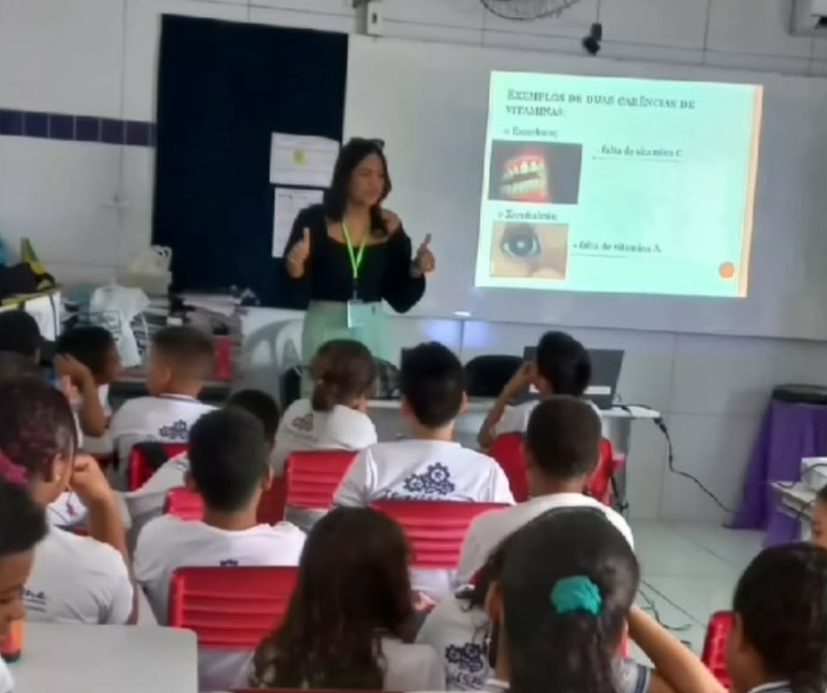

Sobre a Profissional:
Nutricionista especializada em atendimento clínico, com foco em uma alimentação equilibrada, saudável e adaptada às necessidades individuais de cada paciente.
Seu foco é um acompanhamento acolhedor, personalizado e baseado em hábitos que possam ser mantidos no dia a dia.
Serviços
- Avaliação nutricional
- Elaboração de Cardápios e Dietas
- Acompanhamento nutricional
- Reeducação alimentar
- Anamnese
Disponibilidade
Segunda à Sexta:
08:00 às 18:00
Sábado:
08:00 às 12:00
Certificados e Treinamentos Oficiais
- Prescrição e Interpretação de Exames Laboratoriais na Prática Clínica - MMB Cursos
- Boas Práticas em Manipulação de Alimentos: Segurança do Trabalho e Higiene Pessoal - Prefeitura Municipal de Itapissuma
- Atualização em Apoio Matricial na Atenção Primária à Saúde - ESPPE
- Curso de Aleitamento Materno - ABED
Trabalhos Realizados
- Projeto de Extensão de Controle e Qualidade de Alimentos
- Palestras Educacionais em Escolas e Academias
- Trabalhos Voluntários com Atendimento à Domicílio
- Atendimento Ambulatorial
